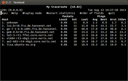

MTR
Dieser Artikel wurde für die folgenden Ubuntu-Versionen getestet:
Dieser Artikel ist größtenteils für alle Ubuntu-Versionen gültig.
Zum Verständnis dieses Artikels sind folgende Seiten hilfreich:
 Das Programm MTR
Das Programm MTR  (Kurzform für My traceroute) kombiniert die Funktionen von traceroute und ping zu einem Netzwerk-Diagnose-Werkzeug. MTR wurde ursprünglich von Matt Kimball geschrieben. Im Oktober 1998 übernahm Roger Wolff die Wartung dieser Software. Das Programm steht unter der GPL.
(Kurzform für My traceroute) kombiniert die Funktionen von traceroute und ping zu einem Netzwerk-Diagnose-Werkzeug. MTR wurde ursprünglich von Matt Kimball geschrieben. Im Oktober 1998 übernahm Roger Wolff die Wartung dieser Software. Das Programm steht unter der GPL.
Hinweis:
Man kann einen Rechner bzw. dessen Firewall so konfigurieren, dass dieser nicht auf ping-Anfragen reagiert. Der Rechner ist dann aber trotzdem erreichbar. Fast alle Rechner/Server, welche in irgendeiner Form öffentliche Daten (Internetseiten usw.) ausliefern, reagieren in der Regel auf ping. Das Abschalten bringt entgegen oft verbreiteter Tipps keinerlei Sicherheitsvorteile.
Funktionsweise¶
Wird MTR gestartet, untersucht es die Netzwerkverbindung zwischen dem Host auf dem MTR läuft und der ausgewählten Gegenstelle (Hostname), indem es absichtlich Pakete mit niedriger Gültigkeitsdauer aussendet und dabei die Antwortzeit der dabei durchlaufenen Router misst. Diese Antwortzeiten und die Antwortquantität bis zur angefragten Gegenstelle gibt MTR aus.
Installation¶
mtr (universe)
 mit apturl
mit apturl
Paketliste zum Kopieren:
sudo apt-get install mtr
sudo aptitude install mtr
Benutzung¶
MTR wird im Terminal [1] gestartet. Man kann es auf zwei Arten betreiben:
Einmal als eine Art „Live-Sicht“, mit der man zeitgenau (live) sehen kann, wie hoch die Latenz der einzelnen Hosts ist und wie sich diese verändert.
Außerdem kann man sich eine Report-Ansicht anzeigen lassen, die man unter anderem zu Dokumentationszwecken und mit weiteren Optionen nutzen kann.
Live-Ansicht¶

Der Befehl hat die folgende (allgemeine) Syntax, welcher so lange eine „Live-Sicht“ erlaubt, bis diese mit der Tastenkombination
Strg +
C oder mittels q beendet wird (alle Beispiele mit ubuntuusers.de).
mtr www.ubuntuusers.de
Das nebenstehende Bild zeigt die bei diesem Befehl angezeigte „Live-Sicht“. Über dieser stehen weitere nur bei dieser Ansicht funktionierende Befehle (Keys): Unter anderem (Display Mode, Restart Statistics, Order of fields und quit).
Mit Display Mode kann man die Ansicht der Ausgabe ändern, Restart Statistics startet die Abfrage neu, mit Order of fields kann man weitere Anzeigen ein- oder ausblenden lassen.
Die Ausgabe selbst zeigt in der linken Spalte den abgefragten Host an, rechts daneben die Packets und die Pings. Die zweispaltige Packetsanzeige zeigt die Verbindungsabbrüche (Loss%) sowie die insgesamt gesendeten Anfragen (Sent) an.
Die fünfspaltige Pings-Anzeige ist unterteilt in den letzten, durchschnittlichen, besten und schlechtesten Wert. Dazu wird noch die Standard Deviation (Standardabweichung) ausgegeben, welche die Abweichungen der Latenzen der einzelnen Hosts anzeigt. Dabei gilt: Je höher die Standardabweichung, umso größer ist der Latenz-Messunterschied eines Hosts und umso höher ist die Inkonsistenz der Messung.
Natürlich kann auch eine IP-Adresse statt eines Hostnames angegeben werden, es wird dann versucht, diesen in eine DNS-Adresse aufzulösen.
Report-Ansicht¶
Nachfolgend ein MTR-Aufruf in der Report-Ansicht (wird durch die Option -r erreicht) zu ubuntuusers.de und den Optionen -r, -w und -c4:
mtr -r -w -c4 www.ubuntuusers.de
HOST: x201 Loss% Snt Last Avg Best Wrst StDev 1.|-- 192.168.1.1 0.0% 4 1.3 1.9 1.0 3.9 1.4 2.|-- lo1.br10.fra.de.hansenet.net 0.0% 4 20.5 21.6 15.0 35.7 9.7 3.|-- ge-7-2-3-0.xd02.fra.de.hansenet.net 0.0% 4 15.4 34.0 14.8 90.6 37.7 4.|-- ae1-0.pr03.decix.de.hansenet.net 0.0% 4 14.7 24.4 14.4 54.1 19.8 5.|-- te3-3-rt1-ffm2.core.noris.net 0.0% 4 15.9 15.8 15.0 16.7 0.7 6.|-- vl604-rt3-nbg3.core.noris.net 0.0% 4 19.3 18.5 17.5 19.3 0.8 7.|-- ae2-603-rt4-nbg3.core.noris.net 0.0% 4 17.8 18.2 17.8 18.5 0.3 8.|-- lisa.ubuntu-eu.org 0.0% 4 19.4 20.6 19.4 23.5 1.9
Optionen¶
| Optionen von MTR | |
| Option | Beschreibung |
-h | Anzeige aller Optionen (Hilfe) |
-c ANZAHL | ANZAHL gibt an, wie viele MTR-Anfragen gesendet werden sollen, danach stoppt MTR automatisch (lässt man die Option -c weg, so werden zehn Anfragen gesendet) |
-r | Reportmodus. Benutzung mit Option -c. MTR läuft die angegebenen Anfragen durch, zeigt die Statistik an und endet automatisch |
-n | MTR zeigt die IP-Adressen anstatt der Hostnames |
-4 | Nutzt IPv4-Protokoll |
-6 | Nutzt IPv6-Protokoll |
-w | Anzeige der vollständigen Hostnamen |
Dies sind nur die gängigsten Optionen. Für weitere Optionen wird auf die unten verlinkten Seiten verwiesen.
 - Thomas Krenn Wiki
- Thomas Krenn Wiki- Erstellt mit Inyoka
-
 2004 – 2017 ubuntuusers.de • Einige Rechte vorbehalten
2004 – 2017 ubuntuusers.de • Einige Rechte vorbehalten
Lizenz • Kontakt • Datenschutz • Impressum • Serverstatus -
Serverhousing gespendet von